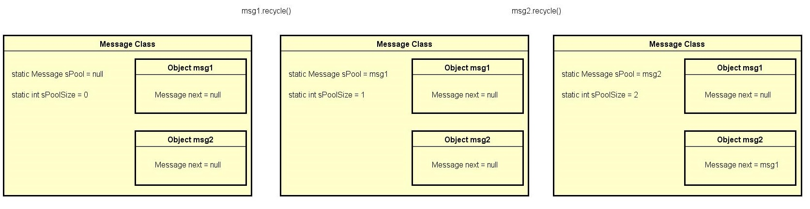
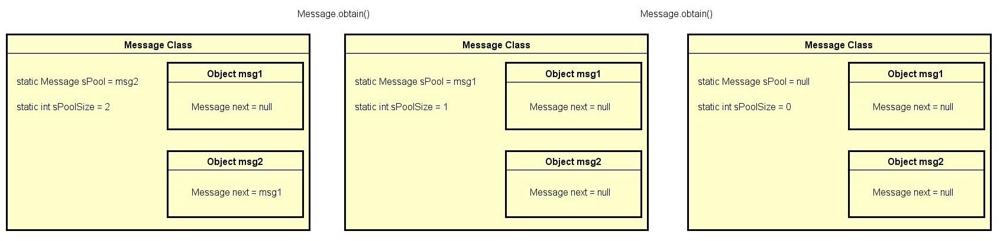

Android消息机制主要涉及三个类Looper、MessageQueue和Handler，另外还需要有ThreadLocal的知识基础。
首先介绍一下三个类的作用：
MessageQueue：消息队列，用于存储待执行的消息Message。
Looper：消息循环者，负责从MessageQueue中取出消息，交给响应的Handler执行。
Handler:发送消息到MessageQueue，执行Looper从MessageQueue中取出的消息。
消息机制初始化
在一个线程中怎样才能够使用消息机制呢？只需要在线程中之下下面两行代码：
|
|
简单的两个代码到底做了什么事情，就让一个线程可以使用消息机制了呢？看一下源码分析一下：
|
|
首先看ThreadLocal中是不是已经有一个Looper对象了，如果有就说明该线程已经初始化过消息机制了。
如果没有Looper对象就新建一个放到ThreadLocal中。来看一下Looper的构造方法
|
|
构造方法中新建一个MessageQueue，把mRun标志为true，mThread指向当前线程。
Looper.loop()方法也是特别简单，死循环的取消息队列里的消息来执行。
|
|
消息的发送与执行
发送消息
消息具体分为what消息与runable消息。
what消息发送方法Handler.sendXXX()， runable消息发送方法Handler.postXXX()。
Handler提供了这么多发送消息的调用方法其实只是为了开发者在不同情景下方便调用，其实他们最终都是通过Handler.sendMessageAtTime(Message msg, long uptimeMillis)实现的。
|
|
至此，消息发送完成，就是这么简单。
需要注意的一点是在将Message添加到MessageQueue之间，Handler将自己的引用交给了Messagemsg.target = this，这是为了下面执行消息的时候使用。
执行消息
消息的执行的第一步就是从消息队列里将消息取出，这件事起是在上面的Looper.loop()中执行的。
看上面代码，消息取出来之后调用了这一句，msg.target.dispatchMessage(msg)，细看一下dispatchMessage这个方法也特别简单。
消息的执行也不复杂
如果是runable消息，直接调用run方法
如果是what消息有两种方法可以处理：1，指定Callback创建Handler 2，重写handleMessage方法
|
|
Tips
- 在一个具有消息机制的线程中，Looper和MessageQueue是唯一的，Handler可以有多个，可以被同一进程下的任意线程调用（线程间通信），这些Handler都是往同一个MessageQueue里存取消息，也统一由Looper取出消息，依次交回Looper所在线程处理。
- 每个Handler都对应唯一的Looper，消息都是发送到这个Looper内的MessageQueue
- new Handler() 以当前线程中的Looper创建Handler
- new Handler(Looper looper) 指定Looper创建Handler
Message的回收与重用
Android应用层完全就运行于这套消息机制中，整个机制源源不断的流通着Message。如果说每次需要Message的时候都通过构造方法创建一个，用完之后再由GC回收掉，这也太浪费。Message设计了一套回收重用机制。
提到重用肯定就想到了池这个概念，一般池的实现都是通过静态集合实现的，而Message的这套池结构也采用的一种栈式池结构。
|
|
recycle的实现：
obtain的实现：
池为空的情况下连续回收msg1，msg2

连续obtain两个Message
